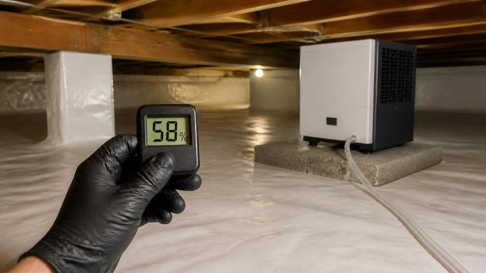
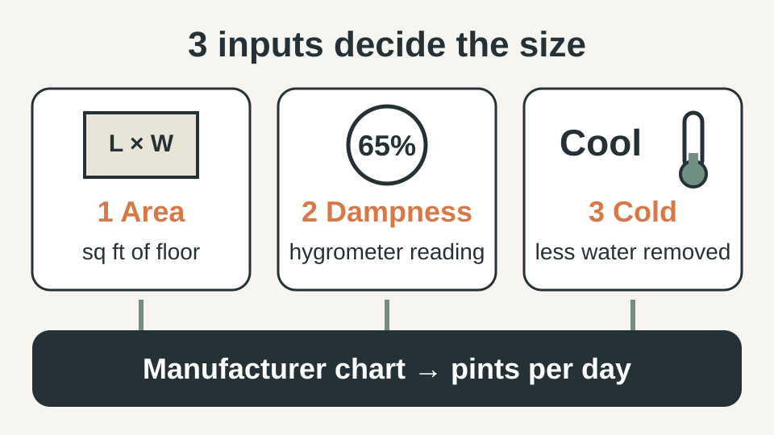
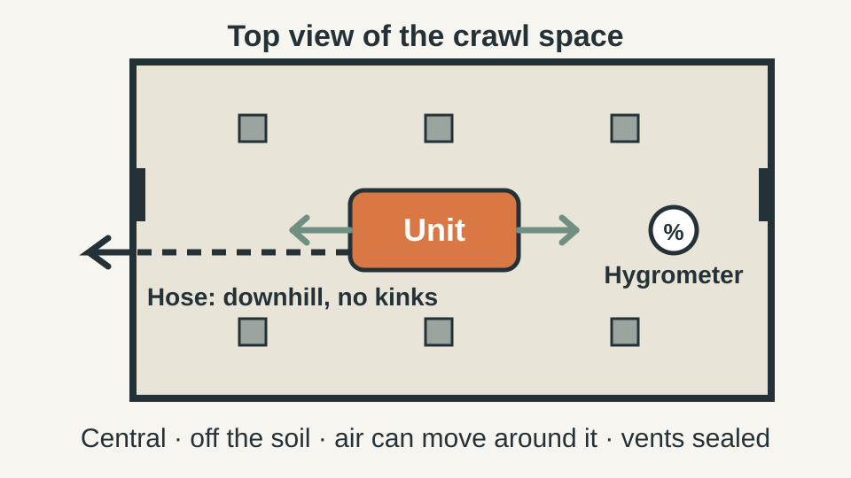
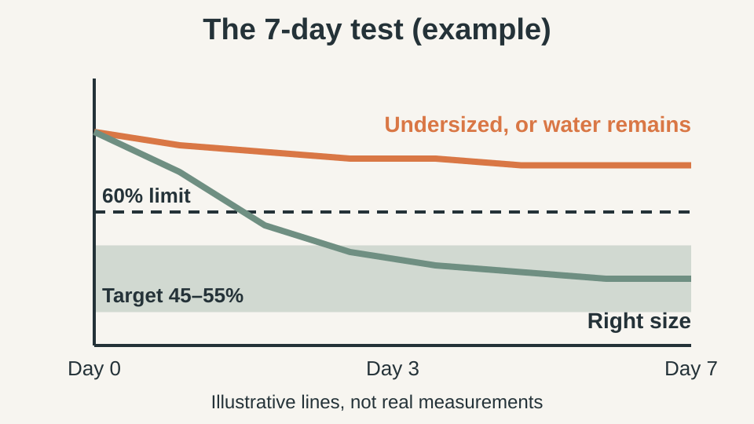

WEEKEND PROJECTS · MOISTURE CONTROL
What Size Dehumidifier Does a Crawl Space Need? A Simple 10-Minute Check
Bought a dehumidifier and the crawl space is still damp? Here is how to size one properly, where to put it, and how to tell in 7 days if it is working.

Disclosure: This post contains an affiliate link. If you buy through it, HomeProjectWise may earn a commission at no extra cost to you.
The most common crawl space mistake is not skipping the dehumidifier. It is buying the wrong one: a small unit that runs nonstop and never gets the humidity down, or a model that was never designed for a cold, dusty space. Either way you pay for electricity and the musty smell stays.
This guide gives you a way to pick the right size and to know within a week whether it is working.
Quick answer
- Target: 45–55% relative humidity, never above 60%.
- Size by: floor area, how wet the space is today, and how cold it stays. Cold air holds less moisture, so a unit pulls out less water there than its label suggests.
- Choose: a unit built for crawl spaces with continuous drainage, so you never empty a bucket.
- Prove it: log the humidity for 7 days after installing it.
Quick plan
- Time: 10 minutes to measure, then 7 days of tracking.
- Cost: a hygrometer costs very little. The dehumidifier is the main expense, which is why you size before you buy.
- Best for: homeowners with a musty smell, damp insulation or humidity above 60% under the house.
- Goal: steady humidity around 50% with a unit that does not run nonstop.
Step 1: Measure the space (5 minutes)
Multiply length by width of the crawl space to get square footage. Crawl spaces are low, so floor area matters far more than height. Write the number down.
Then place a cheap digital hygrometer in the middle of the space and leave it for at least 24 hours. Check it again in a day or two. A single reading can mislead you, because humidity swings between day and night and after rain.
Step 2: Decide how wet it really is
| What you see or smell | Likely situation |
|---|---|
| Slightly musty, no visible moisture, reading 60–65% | Mild dampness |
| Strong smell, damp insulation, condensation on pipes, reading 65–75% | Moderate to heavy dampness |
| Standing water, wet soil, mold on joists, reading above 75% | Fix the water source first. A dehumidifier alone will not be enough. |
Step 3: Cut the moisture load before you buy
This is the step that decides how big a unit you need. Every source you remove lowers the work the dehumidifier has to do.
- Gutters and downspouts: they should drain several feet away from the foundation.
- Bare soil: cover it with a heavy vapor barrier, overlap the seams and tape them. Bare soil releases water vapor all day long.
- Plumbing: look for drips and for pipes that sweat in summer.
- Open vents and gaps: humid summer air entering through vents is a major source. Seal what you can.
Not sure what is causing your dampness? Start with our guide on how to fix damp crawl space humidity, then come back here to size the unit.
Step 4: Pick the capacity
Dehumidifier capacity is rated in pints of water removed per day, but that number is measured in warm conditions. A crawl space is usually cooler, so real output is lower.

Three rules help:
- Use the manufacturer's sizing chart with your square footage and your dampness level from Step 2. Do not rely on a generic number from a forum.
- If you are between two sizes, go up one, but only after Step 3. A bigger unit cannot compensate for an open water source.
- Prefer a model made for crawl spaces. It is designed for continuous operation in low, cool, dusty areas and drains by hose or pump.
A useful reference point: the 2018 International Residential Code described a dehumidification option for certain sealed (unvented) crawl spaces sized at about 70 pints per day for every 1,000 square feet of floor area. Treat it as a starting benchmark, not a guarantee. Sources disagree, cold crawl spaces reduce real output, and your local building department decides what applies to you. Always compare the number with the manufacturer's sizing chart.
Worked example: a crawl space 20 ft by 40 ft is 800 square feet. At the benchmark of 70 pints per 1,000 square feet, that is about 56 pints per day. If the space is cold, very damp or only partly sealed, look at the next size up in the manufacturer's chart rather than the smallest unit that technically fits.
Alorair makes American-built crawl space and basement dehumidifiers, and many of its models are Energy Star® certified. Compare Alorair crawl space dehumidifiers → and check their sizing information against your square footage.
Step 5: Place it properly

- Put it near the center so air circulates across the whole space, not pushed into a corner.
- Keep it off wet soil, on a stable base such as a paver, and leave space around the intake and outlet.
- Run the drain hose downhill to the outside, or use a condensate pump if you cannot get gravity drainage. Never let the hose kink.
- Use a proper outlet, ideally a GFCI-protected one. If you need electrical work, ask a licensed electrician.
Step 6: The 7-day test
This is how you know the unit is the right size, without guessing.

| What you observe | What it means |
|---|---|
| Humidity falls under 60% in 2–3 days and settles near 50% | Correctly sized |
| Runs nonstop for a week and humidity stays above 60% | Undersized, or a water source remains. Recheck Step 3 first. |
| Humidity falls but the musty smell remains | Give it two more weeks. Materials dry slowly. If the smell stays, look for hidden mold. |
Smart check: put a second hygrometer in the farthest corner. If it reads several points higher than the one near the unit, air is not reaching that area. Move the unit toward the middle or add a small fan before you buy a bigger machine.
Set the humidity control to around 50% rather than the lowest setting. Running it at maximum wastes power and does not make the space healthier.
What not to buy yet
- The biggest unit available: it will not fix a leak or bare soil.
- A household unit with a bucket: you will forget to empty it and it will shut off.
- Mold treatments or sprays: they do nothing while the humidity stays high.
- A second unit: wait for the 7-day test before adding more.
Common mistakes
- Buying first and fixing leaks later.
- Using a household unit with a bucket you must empty.
- Trusting one hygrometer reading.
- Hiding the unit in a corner behind insulation.
- Ignoring widespread black mold. If it covers large areas, call a professional.
Do this today (10 minutes)
Measure the length and width of your crawl space, place a hygrometer in the middle, and write down the reading tomorrow morning. With those two numbers, any sizing chart becomes easy to use.
FAQ
What humidity should a crawl space be?
Aim for roughly 45–55%, and keep it below 60%. Above that, mold grows much more easily.
Can I use a regular basement dehumidifier in a crawl space?
Usually not for long. Household units are not built for cold, dusty, cramped spaces and rely on a bucket you must empty.
Is a bigger dehumidifier always better?
No. Fix water sources and cover the soil first, then size for the remaining moisture load.